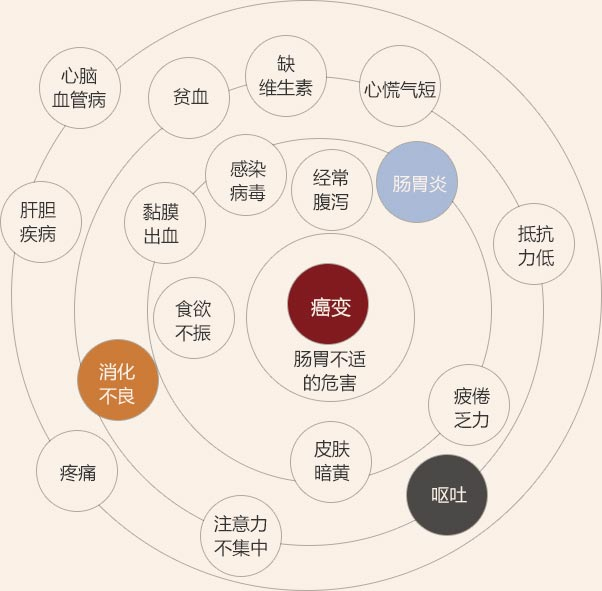

肠胃病的典型症状消化不良/食欲不振/胃痛/胃胀
中医调理养肠胃西查中调 知病根对症调理
西医检查·准确判断病根
- 1、13C呼气试验查肠胃内的幽门螺杆菌
- 2、血清抗HP抗体测定查肠胃内的幽门螺杆菌
- 肠胃疾病大部分跟幽门螺杆菌有关，第1个要查！
- 3、X线检查查消化道动力功能
- 查看消化系统的活力，看消化道功能是否正常！
- 4、肠胃B超查肠胃功能与蠕动情况
- 从形态上看肠胃功能与蠕动，是辅助性的检查！
- 5、无痛肠/胃镜检查查直接查看肠胃黏膜
- 能直观的看到肠/胃黏膜，直接判断是否病变！
中医内调外理·肠胃靠调养
- 1、气滞（肝气犯胃）
- 肠胃胀痛/喉酸口苦
- 2、火郁（肝郁犯胃）
- 易怒/口干口苦口臭
- 3、血瘀（瘀滞伤胃）
- 便便发黑/吃东西会痛
- 4、脾胃虚寒
- 肠胃隐痛/四肢无力
- 5、寒凝胃痛
- 肠胃剧烈疼痛/怕冷
- 6、食滞伤胃
- 厌食呕吐/便便超臭
- 7、胃阴亏虚
- 灼痛/口干/便便很干
- 8、热盛胃痛
- 口干喜冷饮/便便偏红
老中医养肠胃
国粹中医辨证内外调理
中医益阴复胃调理
中医平衡降逆安胃
中医立体定位调理
- 不懂不要紧，治疗方式有：
-
- 1.中医辩证汤药，俗称喝中药；（有代煎服务，不用自己煎药）
- 2.中医针灸推拿，梳理经络；
- 3.中医熥疗，排出体内淤毒；
- 4.中医膏方，浓缩的中药汤剂，味道甜，最适合养肠胃；
老中医帮你养肠胃家有一老如一宝 老中医调理肠胃
- 点击咨询
-
郭广臣人称郭老
主任医师
中医世家50年老中医
入录《中国特色名医大辞典》

肠胃不适的危害肠胃病因不良饮食习惯造成

预约老中医调理肠胃
肠胃病人饮食调整
- 吃容易消化的
-
- 粥汤水：多食用菜汤、米汤、果汁、米粥，注意汤水不能油腻，补充水分与维生素。
- 淡盐水：常腹泻和呕吐应该喝淡盐水，清理肠胃的同时也能补水补盐杀菌。
- 蔬 果：土豆、红薯、白萝卜、南瓜、黄豆等素菜，可常吃吃苹果，苹果富含果酸可有效止泻助消化。
宜忌预约老中医调理
- 不吃刺激和不易消化的
-
- 辛辣油腻：不吃油腻，油炸，油煎食物；不用辛辣调味品和刺激性食品。
- 生 冷：少吃海鲜中的贝类和螃蟹等，不吃硬物，少喝冷水饮料，果汁太冷也不喝。
- 戒 烟 酒：抽烟给肠胃造成刺激，常伴咳嗽也使病情加剧；酒对肠胃的伤害大。
引发肠胃病的原因
肠胃病的病因多是个人不良饮食习惯造成
医学上是这么说的：
肠胃病的根本原因是人体保护性机制与损伤性机制失衡所致。有益菌组成的菌膜屏障遭到破坏、有害菌及其分泌的毒素侵袭肠胃黏膜。
- 不吃早餐
- 暴饮暴食
- 经常饥饿
- 过辣过咸
- 太冷太硬
- 情绪不稳
其他方面，如基因遗传和因身体不适引发的便秘、消化不良也会造成肠胃疾病。
预约检查 找到病根早治疗肠胃病患者最关注的问题中医是怎么调理脾胃的
肠胃病调理地点的环境优雅的五洲国医堂
-
- 国医堂导诊台